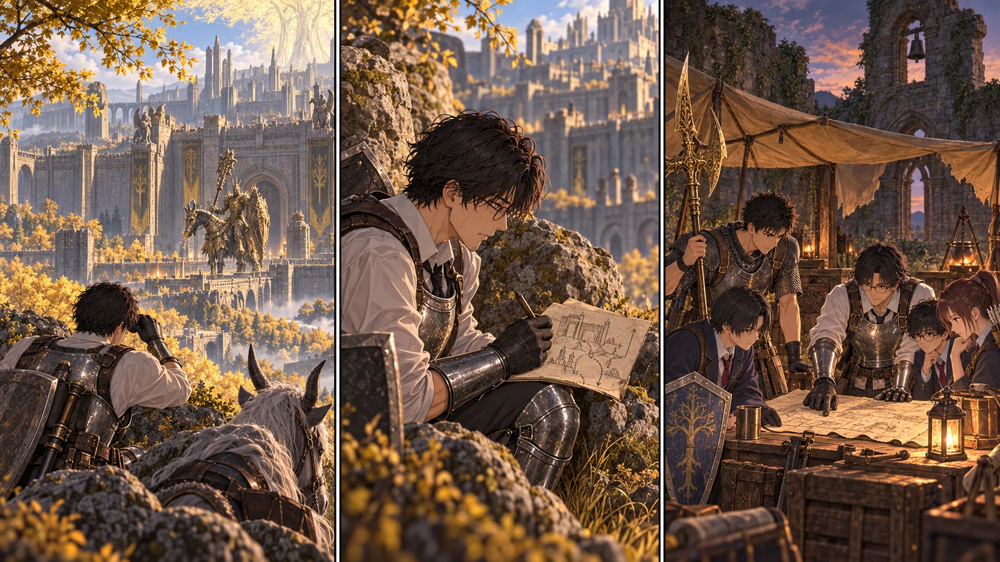

DAY59 / TURN1−69
王都は、門の向こうに。

先生「入口までは分かった。ここから先は、みんなで決める」
【DAY59｜最後の区間】昨日確かめた遮蔽物を、一つずつたどった。デクタスから外郭までの道は、もう全部が初めてではない。それでも先生は、昨日敵がいなかった場所に今日もいないとは考えなかった。止まり、見て、次の止まれる場所へ動く。
巨大な弓の射線を避けた先で、門が見えた。その前には、騎士が一騎いた。教会の前で倒した相手と似ている。だが、似ているから同じ手順で倒せるとは限らない。竜を思わせる武装と、重い馬体。その場を守る姿は、道中の巡回兵とは明らかに違った。
先生は剣を抜かなかった。望遠で輪郭を確かめ、位置と近づける方向を記す。攻撃を受けていない以上、射程や連続攻撃の全部を体験したわけではない。攻略先読みの警告と、いま見た事実は別の欄へ書いた。炎や雷をどう避けるかは、次の作戦で考える課題だ。
【門前の距離】王都へ通じる道はあった。そして、その先へ進むには、門番への対処が要る。大ルーンが二つあるだけで、道中の危険が消えるわけではなかった。先生は門の形を描き終え、来た道を引き返した。今日の偵察に、試しの一撃を付け足すことはしなかった。
新しい祝福を次々と起動したわけでもない。デクタスは移動の支点、外郭の幻影樹は未解放の予備。先生が一人で通った経路を、生徒たちがもう転送できる道と取り違えないよう、帰還後に説明する。
【持ち帰った力】地図の横には、探索班の報告も並んだ。悠の輝石の流星、健太の貫通突き、蓮の嵐の刃。さらにその前に手に入れたアークと、鍛石から強化した二本の武器。新しい防具やタリスマンを都合よく拾ったことにはしなかったが、今ある装備で選べる戦い方は増えた。
カボチャ頭を六人で越えたことを、陽太が改めて話した。先生が囮にならない戦いでも、順番に役目を受け渡せた。その経験は、攻略手帳に書いた名前だけでは持ち帰れないものだった。王都の門番も同じように倒せるとは限らない。それでも次の会議には、自分たちが何をできるかという実績を持って座れた。
【夕｜同じ地図の前で】教会に、三十三人分の顔が揃う。先生は、高原の入口から王都の北東門までをつなぐ線を示した。途中には迂回、巨弓、足場の悪いところ、立ち止まれる岩陰の印がある。線の最後に、竜のツリーガードと書いた。
「入口までは分かった。ここから先は、みんなで決める」。それは進軍の命令ではなかった。誰が前へ出るか。弓や術をどこから届かせるか。戦わずに準備へ戻るなら、何を足すか。先生一人で引いた線の先を、今度は全員の役目へ分ける番だった。
明日は六十日目。赤月をどう迎えるかも、もう先送りにはできない。先生は地図を畳まず、中央へ残した。今夜ここで相談してから、次の一歩を決める。
今回の判定記録
| 判定 | 出目 | 補正 | 合計 |
|---|
| 王都外郭の未確認北東区間を短時間騎乗観測 | 5+4 | 4 | 13 |
| 基地生活 | 5+4 | 3 | 12 |
抽選前の条件 · 抽選結果下界追加条件 · 下界追加出目